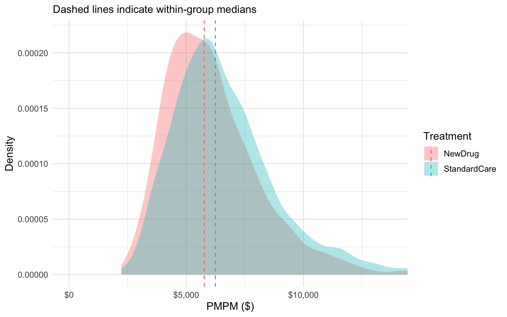
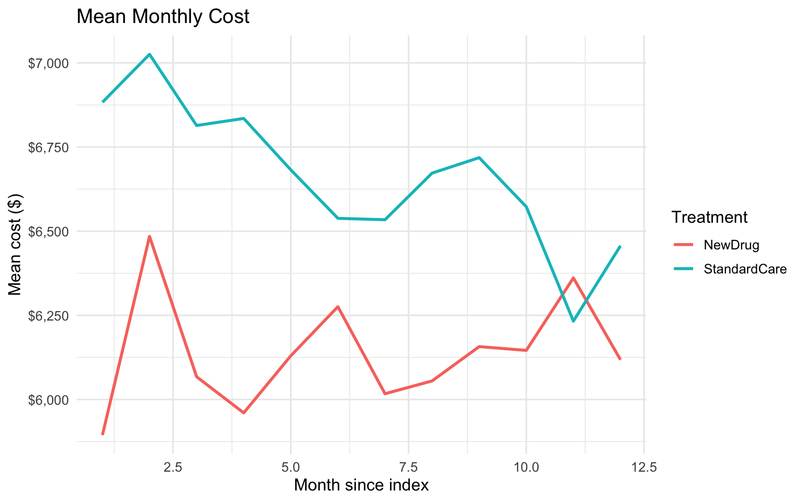
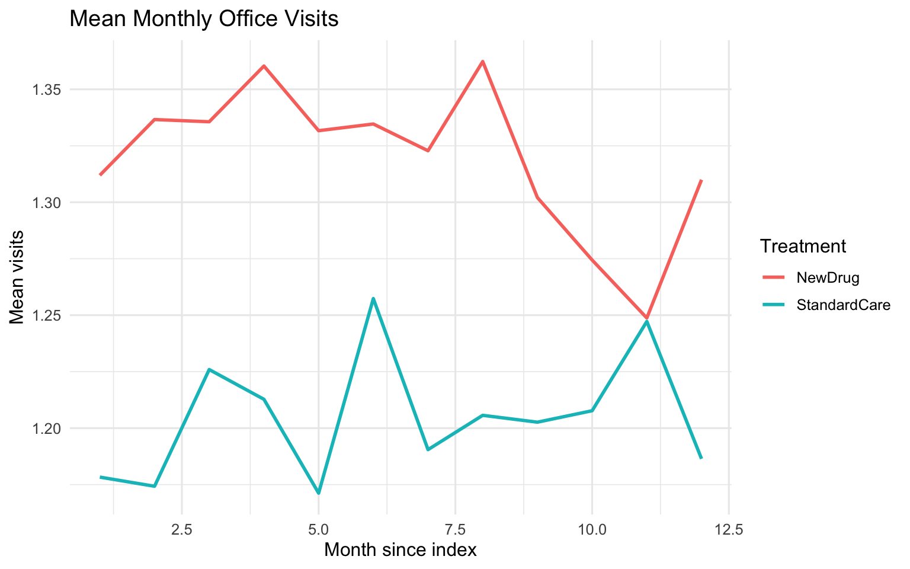
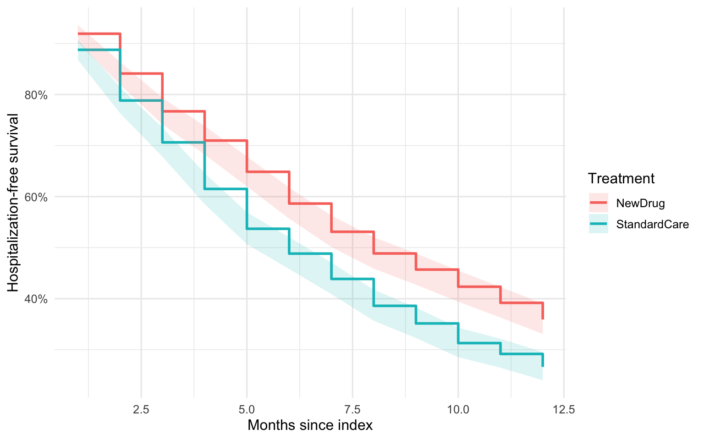
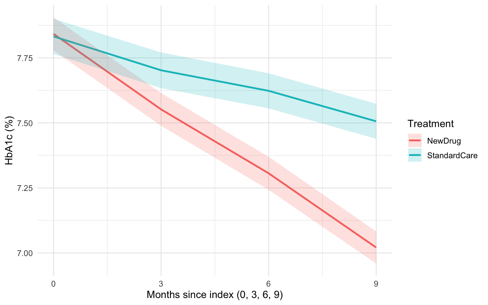
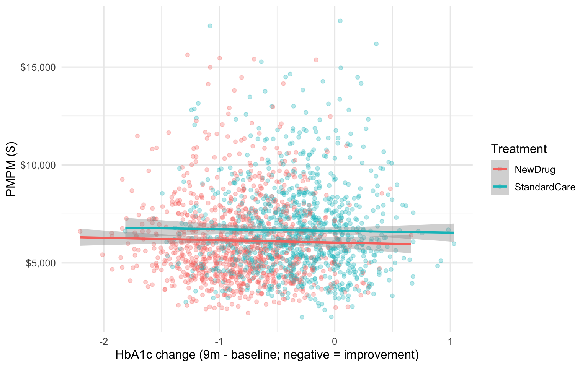

# Install/load packages (suppress install messages for readability)
pkgs <- c("tidyverse", "lubridate", "survival", "broom", "gt", "glue", "scales")
to_install <- setdiff(pkgs, rownames(installed.packages()))
if (length(to_install) > 0) install.packages(to_install, repos = "https://cloud.r-project.org")
library(tidyverse)
library(lubridate)
library(survival)
library(broom)
library(gt)
library(glue)
library(scales)
set.seed(1234)
theme_set(theme_minimal(base_size = 12))
options(scipen = 999) # friendlier numbersAbstract
This Quarto document introduces common data structures and analyses in Health Economics and Outcomes Research (HEOR), focusing on administrative claims and electronic health records (EHR). You will see all code, plots, and tables to understand exactly what each step does. All data are synthetic and for demonstration only.
How to use this document
- Run as-is to generate a synthetic dataset, descriptive tables, and plots.
- Replace the simulated data with your own claims or EHR extracts to adapt the analyses.
- Use the cross-references to orient to figures and tables as you explore.
Setup
Overview
- Data domains
- Claims: costs, utilization (member-month level)
- EHR: clinical measures (e.g., labs/vitals) over time
- Analyses
- Descriptive statistics (baseline)
- Cost and utilization analyses
- Logistic and count models (readmissions, admissions)
- Survival analysis (time to first hospitalization)
- Linking EHR markers to cost outcomes
Simulate HEOR-like Data
We simulate a cohort with treatment assignment, comorbidity, and outcomes; a member-month claims file; and quarterly EHR labs.
# Cohort
N <- 2000
patients <- tibble(
id = 1:N,
sex = sample(c("Female", "Male"), N, replace = TRUE, prob = c(0.55, 0.45)),
age = pmax(18, round(rnorm(N, mean = 62, sd = 12))),
treatment = sample(c("NewDrug", "StandardCare"), N, replace = TRUE, prob = c(0.5, 0.5)),
index_date = as.Date("2022-01-01") + sample(0:60, N, replace = TRUE),
comorbidity = rpois(N, lambda = 2)
) %>%
mutate(
age_std = (age - 62) / 10,
a1c_baseline = pmin(pmax(rnorm(N, 7.4 + 0.2 * comorbidity, 1.0), 5), 12),
sbp_baseline = rnorm(N, 135 + 2 * comorbidity + 0.2 * (age - 62), 10)
)
# Time to first hospitalization (months)
base_hazard <- 0.08
lp <- with(patients, -0.30 * (treatment == "NewDrug") + 0.15 * comorbidity + 0.01 * (age - 62))
rate <- base_hazard * exp(lp)
t_event_cont <- rexp(N, rate = rate) # months
t_event_m <- ceiling(t_event_cont)
event <- as.integer(t_event_m <= 12)
follow_up <- pmin(t_event_m, 12)
patients <- patients %>%
mutate(time_to_event_m = t_event_m,
event = event,
follow_up_m = follow_up)
# 30-day readmission (binary outcome)
p_readmit30 <- with(patients, plogis(-2 + 0.35 * comorbidity + 0.1 * age_std + 0.25 * (treatment == "StandardCare")))
patients <- patients %>% mutate(readmit30 = rbinom(n(), 1, p_readmit30))
# Claims: member-month costs and utilization
claims_long <- patients %>%
mutate(n_months = 12L) %>%
tidyr::uncount(n_months, .id = "month_row") %>%
group_by(id) %>%
mutate(month = row_number()) %>%
ungroup() %>%
mutate(
meanlog = 8 + 0.14 * comorbidity + 0.06 * age_std + 0.08 * (treatment == "StandardCare") + 0.01 * month,
cost = rlnorm(n(), meanlog = meanlog, sdlog = 0.7),
event_boost = case_when(
(month == time_to_event_m) & (event == 1) ~ 1.0,
abs(month - time_to_event_m) == 1 & (event == 1) ~ 0.5,
TRUE ~ 0
),
cost = cost * (1 + event_boost),
office_visits = rpois(n(), lambda = pmax(0.1, 0.8 + 0.2 * comorbidity + 0.1 * (treatment == "NewDrug"))),
ip_admit = rbinom(n(), 1, prob = plogis(-3 + 0.5 * comorbidity + 0.8 * ((month == time_to_event_m) & (event == 1))))
)
claims_agg <- claims_long %>%
group_by(id) %>%
summarise(
total_cost = sum(cost),
pmpm = mean(cost),
total_visits = sum(office_visits),
total_admits = sum(ip_admit),
months = n(),
.groups = "drop"
) %>%
left_join(patients %>% select(id, treatment, sex, age, comorbidity, follow_up_m, event, readmit30), by = "id")
# EHR: quarterly labs/vitals (0, 3, 6, 9 months)
ehr <- patients %>%
mutate(n_visits = 4L) %>%
tidyr::uncount(n_visits, .id = "visit_order") %>%
group_by(id) %>%
mutate(day = c(0, 90, 180, 270)[row_number()],
date = index_date + days(day)) %>%
ungroup() %>%
mutate(
a1c = pmin(pmax(a1c_baseline + if_else(treatment == "NewDrug", -0.8 * (day / 270), -0.3 * (day / 270)) + rnorm(n(), 0, 0.3), 5), 12),
sbp = sbp_baseline + if_else(treatment == "NewDrug", -3 * (day / 270), -1 * (day / 270)) + rnorm(n(), 0, 4)
)
# Quick peek (first few rows)
head(patients)head(claims_long)head(ehr)Cohort and Baseline Descriptives
We summarize demographics and comorbidity by treatment. See Table 1.
#```{r tbl-baseline, tbl.cap=“Baseline characteristics by treatment group”}
desc <- patients %>%
transmute(
treatment,
age,
female = as.integer(sex == "Female"),
comorbidity
) %>%
group_by(treatment) %>%
summarise(
n = n(),
age_mean = mean(age),
age_sd = sd(age),
female_pct = mean(female) * 100,
comorb_mean = mean(comorbidity),
.groups = "drop"
)
gt(desc) %>%
fmt_number(columns = c(age_mean, age_sd, comorb_mean), decimals = 1) %>%
fmt_number(columns = c(female_pct), decimals = 1) %>%
cols_label(
treatment = "Treatment",
n = "N",
age_mean = "Age (mean)",
age_sd = "Age (SD)",
female_pct = "Female (%)",
comorb_mean = "Comorbidity (mean)"
) %>%
tab_header(
title = md("Table 1. Baseline Characteristics by Treatment")
) %>%
tab_source_note(md("All values are synthetic."))| Table 1. Baseline Characteristics by Treatment | |||||
|---|---|---|---|---|---|
| Treatment | N | Age (mean) | Age (SD) | Female (%) | Comorbidity (mean) |
| NewDrug | 1013 | 62.5 | 12.1 | 54.6 | 2.0 |
| StandardCare | 987 | 62.0 | 11.8 | 56.2 | 2.0 |
| All values are synthetic. | |||||
Claims: Cost and Utilization
We examine PMPM costs and monthly utilization. See Figure 1 and Figure 2.
ggplot(claims_agg, aes(x = pmpm, fill = treatment)) +
geom_density(alpha = 0.35, color = NA) +
geom_vline(data = claims_agg %>% group_by(treatment) %>% summarise(med = median(pmpm)),
aes(xintercept = med, color = treatment), linetype = "dashed") +
coord_cartesian(xlim = c(0, quantile(claims_agg$pmpm, 0.99))) +
scale_x_continuous(labels = dollar) +
labs(x = "PMPM ($)", y = "Density", fill = "Treatment", color = "Treatment",
subtitle = "Dashed lines indicate within-group medians")
monthly_summary <- claims_long %>%
group_by(month, treatment) %>%
summarise(mean_cost = mean(cost), mean_visits = mean(office_visits), .groups = "drop")
p_cost <- ggplot(monthly_summary, aes(month, mean_cost, color = treatment)) +
geom_line(linewidth = 1) +
scale_y_continuous(labels = dollar) +
labs(title = "Mean Monthly Cost", x = "Month since index", y = "Mean cost ($)", color = "Treatment")
p_visits <- ggplot(monthly_summary, aes(month, mean_visits, color = treatment)) +
geom_line(linewidth = 1) +
labs(title = "Mean Monthly Office Visits", x = "Month since index", y = "Mean visits", color = "Treatment")
p_cost
p_visits
Statistical Models on Claims
We model inpatient admissions (count outcome) and 30-day readmission (binary outcome). See Table 2 and Table 3.
fit_pois <- glm(
total_admits ~ treatment + age + sex + comorbidity + offset(log(months)),
family = poisson(),
data = claims_agg
)
irr <- tidy(fit_pois, exponentiate = TRUE, conf.int = TRUE) %>%
mutate(across(c(estimate, conf.low, conf.high), ~round(.x, 2))) %>%
mutate(term = recode(term,
"(Intercept)" = "Intercept",
"treatmentNewDrug" = "Treatment: NewDrug (vs StandardCare)",
"age" = "Age (per year)",
"sexMale" = "Male (vs Female)",
"comorbidity" = "Comorbidity (per unit)"))
gt(irr) %>%
cols_label(term = "Term", estimate = "IRR", conf.low = "Lower 95% CI", conf.high = "Upper 95% CI", p.value = "p-value") %>%
tab_header(title = md("Table 2. Poisson Model for Inpatient Admissions")) %>%
fmt_number(columns = p.value, decimals = 3)| Table 2. Poisson Model for Inpatient Admissions | ||||||
|---|---|---|---|---|---|---|
| Term | IRR | std.error | statistic | p-value | Lower 95% CI | Upper 95% CI |
| Intercept | 0.07 | 0.095606559 | -28.37217251 | 0.000 | 0.05 | 0.08 |
| treatmentStandardCare | 1.00 | 0.033636477 | -0.06755887 | 0.946 | 0.93 | 1.07 |
| Age (per year) | 1.00 | 0.001392957 | -1.55290964 | 0.120 | 1.00 | 1.00 |
| Male (vs Female) | 1.00 | 0.033807177 | -0.01236283 | 0.990 | 0.94 | 1.07 |
| Comorbidity (per unit) | 1.46 | 0.009985304 | 37.84055836 | 0.000 | 1.43 | 1.49 |
fit_log <- glm(readmit30 ~ treatment + age + sex + comorbidity, data = patients, family = binomial())
or <- tidy(fit_log, exponentiate = TRUE, conf.int = TRUE) %>%
mutate(across(c(estimate, conf.low, conf.high), ~round(.x, 2))) %>%
mutate(term = recode(term,
"(Intercept)" = "Intercept",
"treatmentNewDrug" = "Treatment: NewDrug (vs StandardCare)",
"age" = "Age (per year)",
"sexMale" = "Male (vs Female)",
"comorbidity" = "Comorbidity (per unit)"))
gt(or) %>%
cols_label(term = "Term", estimate = "OR", conf.low = "Lower 95% CI", conf.high = "Upper 95% CI", p.value = "p-value") %>%
tab_header(title = md("Table 3. Logistic Model for 30-day Readmission")) %>%
fmt_number(columns = p.value, decimals = 3)| Table 3. Logistic Model for 30-day Readmission | ||||||
|---|---|---|---|---|---|---|
| Term | OR | std.error | statistic | p-value | Lower 95% CI | Upper 95% CI |
| Intercept | 0.06 | 0.310477797 | -9.074056 | 0.000 | 0.03 | 0.11 |
| treatmentStandardCare | 1.13 | 0.105680489 | 1.132052 | 0.258 | 0.92 | 1.39 |
| Age (per year) | 1.01 | 0.004433342 | 3.257151 | 0.001 | 1.01 | 1.02 |
| Male (vs Female) | 1.14 | 0.105943160 | 1.270461 | 0.204 | 0.93 | 1.41 |
| Comorbidity (per unit) | 1.37 | 0.036799816 | 8.649576 | 0.000 | 1.28 | 1.48 |
Survival Analysis: Time to First Hospitalization
We estimate Kaplan–Meier curves by treatment and perform a log-rank test. See Figure 3 and Table 4.
surv_obj <- with(patients, Surv(time = follow_up_m, event = event == 1))
fit_km <- survfit(surv_obj ~ treatment, data = patients)
# Tidy the KM results for ggplot-based step curves with bands
km_df <- broom::tidy(fit_km) %>%
mutate(strata = str_replace(strata, "treatment=", ""))
head(km_df)ggplot(km_df, aes(x = time, y = estimate, color = strata, fill = strata)) +
geom_step(linewidth = 1) +
geom_ribbon(aes(ymin = conf.low, ymax = conf.high), alpha = 0.15, color = NA) +
scale_y_continuous(labels = percent_format(accuracy = 1)) +
labs(x = "Months since index", y = "Hospitalization-free survival", color = "Treatment", fill = "Treatment")
lr <- survdiff(surv_obj ~ treatment, data = patients)
# Convert survdiff to a tidy one-row table
chisq <- unname(lr$chisq)
pval <- pchisq(chisq, df = length(lr$n) - 1, lower.tail = FALSE)
lr_tbl <- tibble(
test = "Log-rank",
statistic = round(chisq, 3),
df = length(lr$n) - 1,
p_value = signif(pval, 3)
)
gt(lr_tbl) %>%
tab_header(title = md("Table 4. Log-rank Test for Time to First Hospitalization"))| Table 4. Log-rank Test for Time to First Hospitalization | |||
|---|---|---|---|
| test | statistic | df | p_value |
| Log-rank | 26.139 | 1 | 0.000000318 |
EHR: Clinical Trajectories (e.g., HbA1c)
We summarize HbA1c change over time by treatment. See Figure 4.
a1c_summary <- ehr %>%
group_by(day, treatment) %>%
summarise(
n = n(),
mean_a1c = mean(a1c),
se = sd(a1c) / sqrt(n),
.groups = "drop"
)
ggplot(a1c_summary, aes(day, mean_a1c, color = treatment, fill = treatment)) +
geom_line(linewidth = 1) +
geom_ribbon(aes(ymin = mean_a1c - 1.96 * se, ymax = mean_a1c + 1.96 * se), alpha = 0.2, color = NA) +
scale_x_continuous(breaks = c(0, 90, 180, 270), labels = c("0", "3", "6", "9")) +
labs(x = "Months since index (0, 3, 6, 9)", y = "HbA1c (%)", color = "Treatment", fill = "Treatment")
Linking EHR and Claims: Biomarkers vs Cost
We test whether improvement in HbA1c (negative change) is associated with lower PMPM. See Figure 5 and Table 5.
a1c_change <- ehr %>%
select(id, day, a1c) %>%
arrange(id, day) %>%
group_by(id) %>%
summarise(
a1c_delta = a1c[day == 270] - a1c[day == 0],
.groups = "drop"
)
claims_ehr <- claims_agg %>%
left_join(a1c_change, by = "id") %>%
left_join(patients %>% select(id), by = "id")
ggplot(claims_ehr, aes(a1c_delta, pmpm, color = treatment)) +
geom_point(alpha = 0.3) +
geom_smooth(method = "lm", se = TRUE) +
scale_y_continuous(labels = dollar) +
labs(x = "HbA1c change (9m - baseline; negative = improvement)", y = "PMPM ($)", color = "Treatment")`geom_smooth()` using formula = 'y ~ x'
fit_cost <- lm(pmpm ~ a1c_delta + treatment + age + sex + comorbidity, data = claims_ehr)
cost_tidy <- broom::tidy(fit_cost, conf.int = TRUE) %>%
mutate(across(c(estimate, conf.low, conf.high), ~round(.x, 2))) %>%
mutate(term = recode(term,
"(Intercept)" = "Intercept",
"a1c_delta" = "HbA1c change (9m - baseline)",
"treatmentNewDrug" = "Treatment: NewDrug (vs StandardCare)",
"age" = "Age (per year)",
"sexMale" = "Male (vs Female)",
"comorbidity" = "Comorbidity (per unit)"))
gt(cost_tidy) %>%
cols_label(term = "Term", estimate = "Estimate ($)", conf.low = "Lower 95% CI", conf.high = "Upper 95% CI", p.value = "p-value") %>%
tab_header(title = md("Table 5. PMPM vs HbA1c Change and Covariates")) %>%
fmt_number(columns = p.value, decimals = 3)| Table 5. PMPM vs HbA1c Change and Covariates | ||||||
|---|---|---|---|---|---|---|
| Term | Estimate ($) | std.error | statistic | p-value | Lower 95% CI | Upper 95% CI |
| Intercept | 1708.76 | 214.488313 | 7.9666733 | 0.000 | 1288.11 | 2129.40 |
| HbA1c change (9m - baseline) | -64.62 | 82.690750 | -0.7814828 | 0.435 | -226.79 | 97.55 |
| treatmentStandardCare | 572.34 | 82.361203 | 6.9491632 | 0.000 | 410.82 | 733.86 |
| Age (per year) | 36.06 | 2.987932 | 12.0697236 | 0.000 | 30.20 | 41.92 |
| Male (vs Female) | 136.41 | 71.877599 | 1.8978550 | 0.058 | -4.55 | 277.38 |
| Comorbidity (per unit) | 1008.25 | 25.409613 | 39.6798774 | 0.000 | 958.42 | 1058.08 |
Best Practices and Next Steps
- Address confounding: Propensity scores (matching/weighting), doubly robust estimators, or instrumental variables when appropriate.
- Model skewed costs: Use Gamma GLM with log link or two-part models for zero-inflated costs.
- Time-to-event: Consider Cox models and assess proportional hazards (e.g., Schoenfeld residuals).
- Missing data: Multiple imputation and sensitivity analyses.
- Governance: Claims/EHR use requires privacy, security, IRB/contract compliance, and a data dictionary for reproducibility.
- Reproducibility: Version control, code review, and pre-specified analysis plans.
Appendix: Alternative Cost Model (Gamma GLM)
fit_gamma <- glm(pmpm ~ a1c_delta + treatment + age + sex + comorbidity,
data = claims_ehr,
family = Gamma(link = "log"))
pred_df <- claims_ehr %>%
mutate(a1c_delta_q = cut(a1c_delta, breaks = quantile(a1c_delta, probs = seq(0,1,0.2), na.rm = TRUE),
include.lowest = TRUE, labels = paste0("Q", 1:5))) %>%
group_by(treatment, a1c_delta_q) %>%
summarise(age = mean(age), comorbidity = mean(comorbidity),
sex = names(sort(table(sex), decreasing = TRUE))[1],
a1c_delta = mean(a1c_delta, na.rm = TRUE),
.groups = "drop") %>%
mutate(pred = predict(fit_gamma, newdata = ., type = "response"))
ggplot(pred_df, aes(a1c_delta_q, pred, fill = treatment)) +
geom_col(position = position_dodge(width = 0.7)) +
scale_y_continuous(labels = dollar) +
labs(x = "HbA1c change quantile (9m - baseline; Q1 = greatest improvement)",
y = "Predicted PMPM ($)", fill = "Treatment")
Session Info
sessionInfo()R version 4.4.3 (2025-02-28)
Platform: aarch64-apple-darwin20
Running under: macOS Sequoia 15.3.1
Matrix products: default
BLAS: /Library/Frameworks/R.framework/Versions/4.4-arm64/Resources/lib/libRblas.0.dylib
LAPACK: /Library/Frameworks/R.framework/Versions/4.4-arm64/Resources/lib/libRlapack.dylib; LAPACK version 3.12.0
locale:
[1] en_US.UTF-8/en_US.UTF-8/en_US.UTF-8/C/en_US.UTF-8/en_US.UTF-8
time zone: America/Los_Angeles
tzcode source: internal
attached base packages:
[1] stats graphics grDevices utils datasets methods base
other attached packages:
[1] scales_1.4.0 glue_1.8.0 gt_1.0.0 broom_1.0.8
[5] survival_3.8-3 lubridate_1.9.4 forcats_1.0.0 stringr_1.5.1
[9] dplyr_1.1.4 purrr_1.0.4 readr_2.1.5 tidyr_1.3.1
[13] tibble_3.3.0 ggplot2_3.5.2 tidyverse_2.0.0
loaded via a namespace (and not attached):
[1] sass_0.4.10 generics_0.1.4 xml2_1.3.8 stringi_1.8.7
[5] lattice_0.22-6 hms_1.1.3 digest_0.6.37 magrittr_2.0.3
[9] evaluate_1.0.4 grid_4.4.3 timechange_0.3.0 RColorBrewer_1.1-3
[13] fastmap_1.2.0 jsonlite_2.0.0 Matrix_1.7-2 backports_1.5.0
[17] mgcv_1.9-1 cli_3.6.5 rlang_1.1.6 litedown_0.7
[21] commonmark_1.9.5 splines_4.4.3 base64enc_0.1-3 withr_3.0.2
[25] yaml_2.3.10 tools_4.4.3 tzdb_0.5.0 vctrs_0.6.5
[29] R6_2.6.1 lifecycle_1.0.4 htmlwidgets_1.6.4 pkgconfig_2.0.3
[33] pillar_1.10.2 gtable_0.3.6 xfun_0.52 tidyselect_1.2.1
[37] rstudioapi_0.17.1 knitr_1.50 farver_2.1.2 nlme_3.1-167
[41] htmltools_0.5.8.1 labeling_0.4.3 rmarkdown_2.29 compiler_4.4.3
[45] markdown_2.0